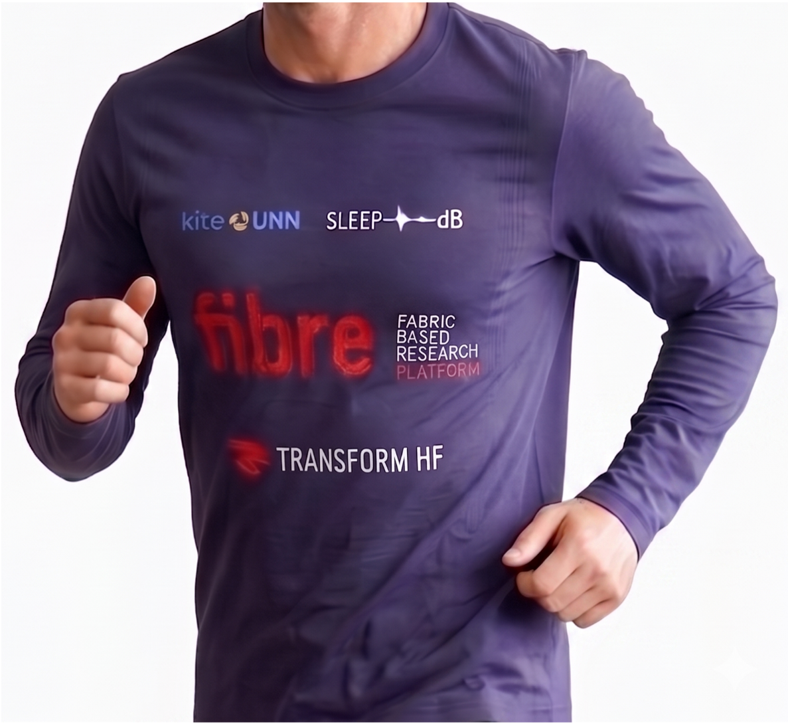
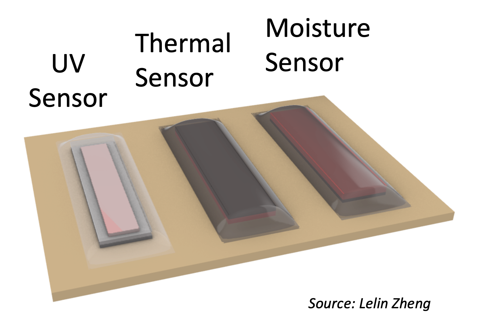
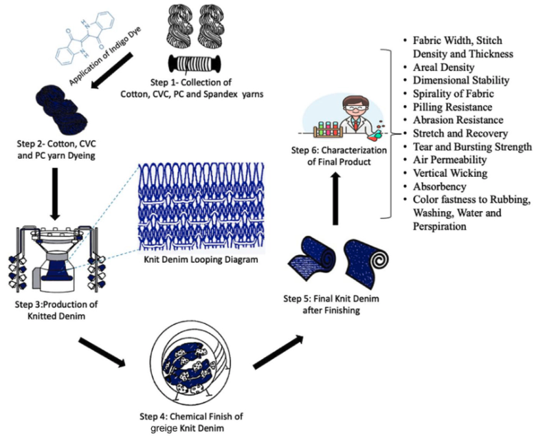

Advancing textile-based solutions for sleep apnea, thermoregulation, and protective materials — President ITS, Postdoctoral Fellow UofT & UHN, Theme Editor EMBC 2026

Wearable textile solutions for real-time sleep apnea monitoring and therapeutic intervention.
Learn more →
Adaptive textile prototypes for real-time skin temperature monitoring and thermal regulation.
Learn more →
Smart fabrics for continuous respiratory and cardiac monitoring with clinical-grade accuracy.
Learn more →
Wearable textile antennas for 6G wireless body-centric networks.
View PDF →
Multi-scale analysis of aged para-aramid and meta-aramid fibers for protective clothing.
View on Wiley →
Innovative melt-electrowriting and 3D printing for functional yarn fabrication.
View on MDPI →
Research on aging of firefighters' protective clothing featured in the University of Alberta's engineering magazine.
View media →
Media coverage of innovative approaches to extending the lifespan of firefighter turnout gear.
View media →
Spotlight discussion on collaborative research in aging and technology for healthcare innovation.
View media →Interested in smart textile research, collaboration, or speaking engagements? I'd love to connect.
Get in Touch